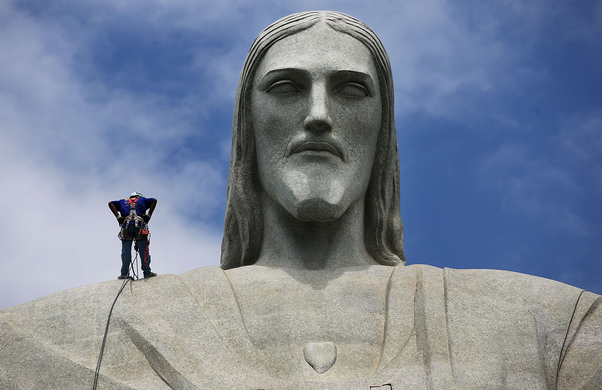
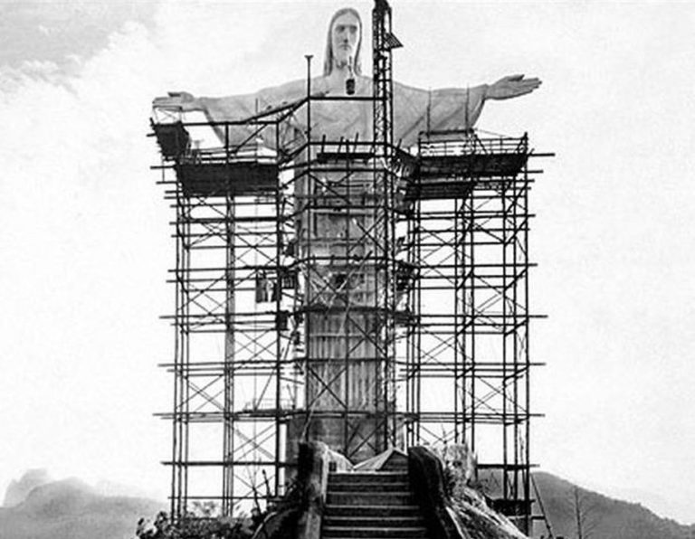
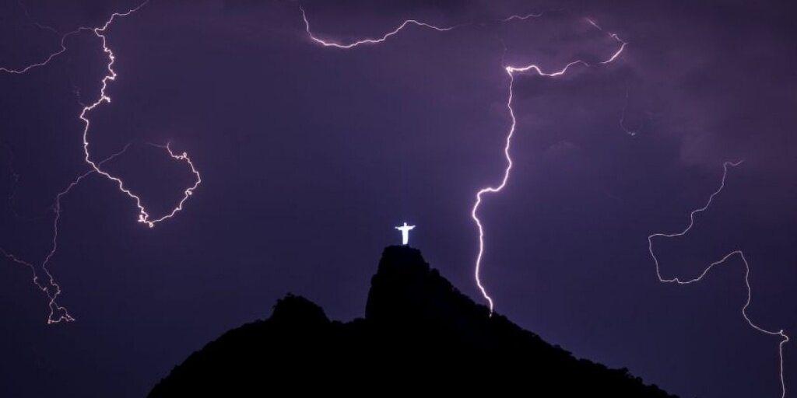
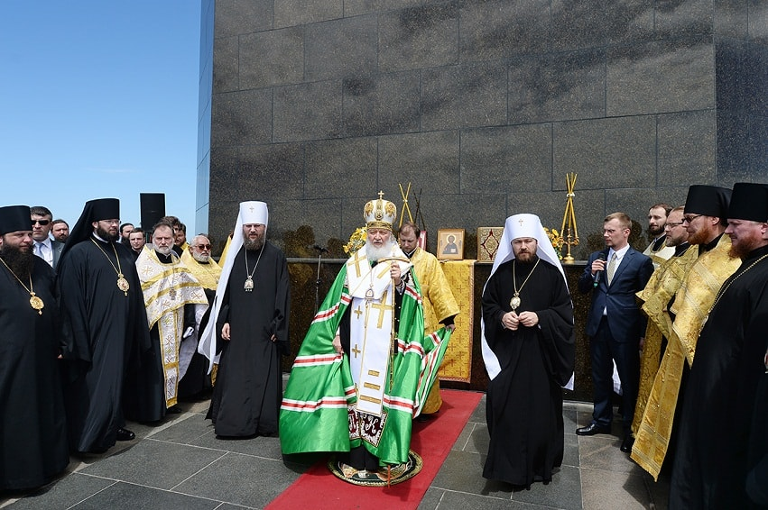
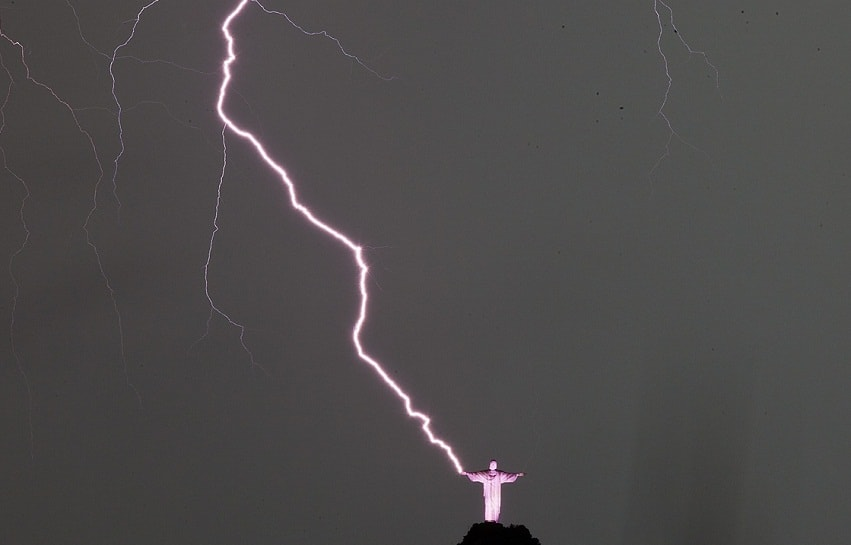
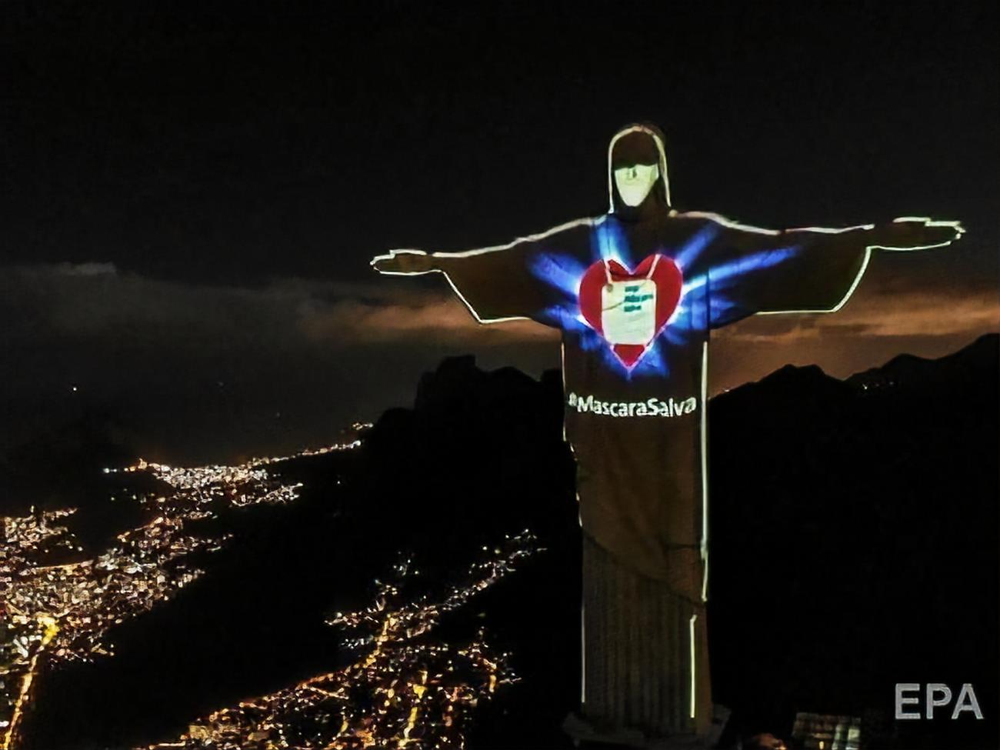
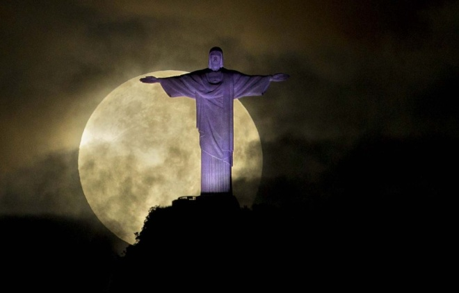

Статуя Христа-Искупителя – известная скульптура Иисуса с распростертыми руками, которая установлена на вершине горы Корковаду в Рио-де-Жанейро. Она считается символом города и всей страны. Гора возвышается на 800 метров над Рио, поэтому от подножия статуи открывается потрясающий вид на отдельные достопримечательности, среди которых пик Сахарная голова, большой залив Гуанабара и длинный мост через него, известнейший стадион Маракана, пляжи Ипанема и Копакабана.

Статуя Христа-Искупителя не является самым большим изваянем в мире, но все равно потрясает своими размерами. Высота статуи - 38 метров. 8 метров приходится на мраморный пьедестал-цоколь с действующей внутри часовней. Масса Христа примерно 630 тонн. Размах рук Христа составляет 28 метров. На голову Христа приходится 3,75 метра.
В 1921 г. в Бразилии велась подготовка к празднованию столетней годовщины со дня независимости, в результате чего и появилась идея возведения статуи Христа-Искупителя на вершине горы. Новый монумент должен был стать ключевым элементом столицы, а также привлекать туристов на обзорную площадку, с которой весь город как на ладони.
Для сбора денег был привлечен журнал «Крузейру», который организовал подписку для возведения памятника. По итогам сборов удалось выручить свыше двух миллионов рейсов. Церковь тоже не осталась в стороне: дон Себастьян Леме, архиепископ города, выделил немалую сумму для строительства статуи Иисуса из пожертвований прихожан.
Общий срок создания и установки Христа-Искупителя составил девять лет. Первоначальный проект принадлежит художнику Карлосу Освальду. По его задумке Христос с распростертыми руками должен был стоять на постаменте в виде земного шара. Доработанная версия эскиза принадлежит руке инженера Эйтора да Силва Кошту, который внес изменения в форму пьедестала. Именно таким сегодня можно увидеть знаменитый христианский памятник.
Ввиду недостаточной развитости технологий большую часть элементов изготавливали во Франции. Готовые детали перевозили в Бразилию, после чего по железной дороге транспортировали на вершину Корковаду. В октябре 1931 статую осветили в ходе торжественной церемонии. С тех пор она стала признанным символом города.

Католическая церковь сразу дала свое одорение на сооружение памятника. Немалая сумма была собрана прихожанами и выделена духовенством на строительсвто. Статуя явлется символом христинаской веры. Раскрытые руки отдают любовь и веру каждому.
После торжественного открытия памятник освятили, после чего местные церковные служителеи в знаменательные дни стали проводить здесь службы. В 1965 году состялась еще одна с церемония освящения, которую проводил папа римский Павел VI. В 2006 году статуя была объявлена святныей Бразилили. Среди мировых религиозных монументов - это одно из самых почитаемых и посещаемых мест на Земле.

Русская православная церковь довольно долго держалась в стороне от этого значимого для христианства памятника, но в 2007 г. состоялось первое богослужение рядом с постаментом. В этот период были обозначены Дни российской культуры в Латинской Америке, что стало причиной приезда многих значительных персон, в том числе и иерархов церкви. В феврале прошлого года Патриарх Кирилл проводил службу в поддержку христианам, аккомпанементом ему выступал духовный хор Московской епархии.


